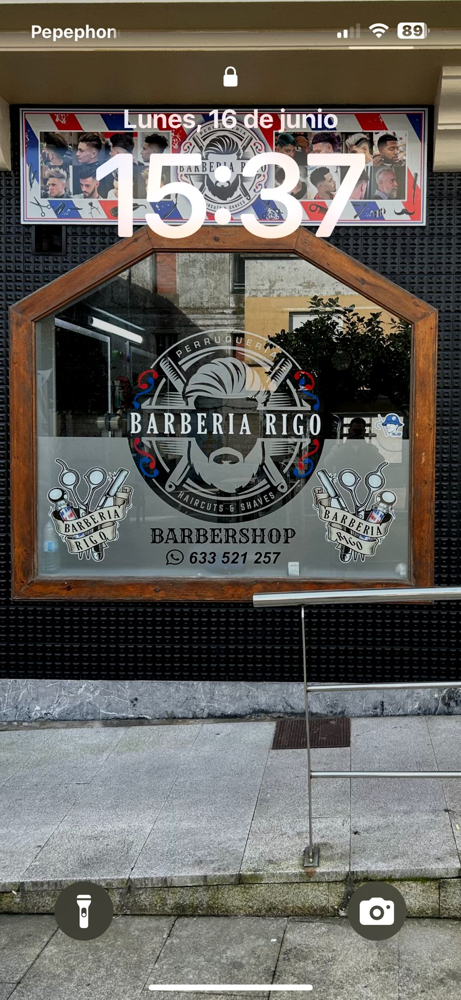
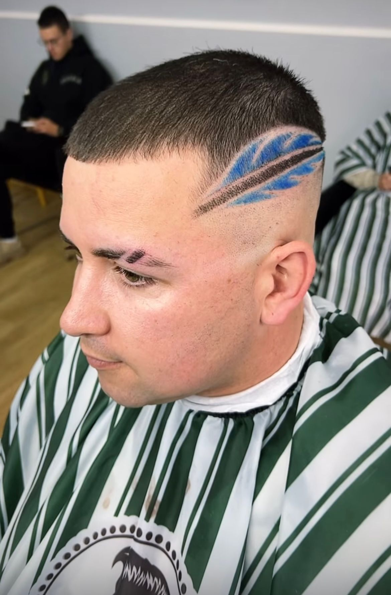
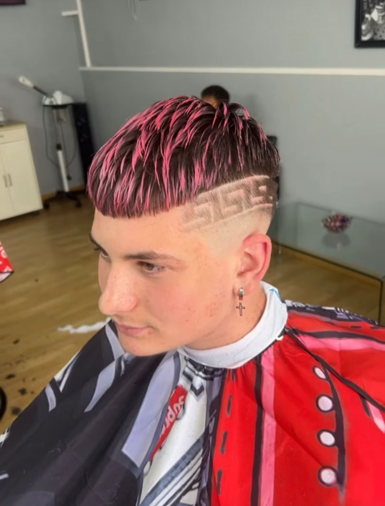

A los 13 años, Rigo cortaba el pelo a sus amigos en un porche de La Habana, afilando la navaja en la tapa de un frasco de cristal. Nacía así una pasión que cruzaría océanos.

«Sin apenas instrumental, con 14 años Rigo ya arreglaba a sus amigos del barrio»

Miami
En la bulliciosa escena latina, perfeccionó el degradado perfecto –el famoso fade– y se convirtió en barbero de reguetoneros. «Cuando un videoclip se retrasa, muchas veces soy el culpable», bromea.
Rigo en acción: cada corte es una coreografía de precisión.
Barbanza
El 15 de agosto de 2020 abrió sus puertas en A Pobra do Caramiñal. Desde entonces «han venido chavales en lancha desde A Illa de Arousa» solo para sentarse en su silla.

Galería
Contacto
Plaza Victoriano García Martí 22, Bajo
15940 A Pobra do Caramiñal (A Coruña)
Tel/WhatsApp: 633 521 257
Instagram: @barberiarigo
Horario: L-V 09:30-13:30 / 16:00-21:00 · Sáb 10:00-15:00